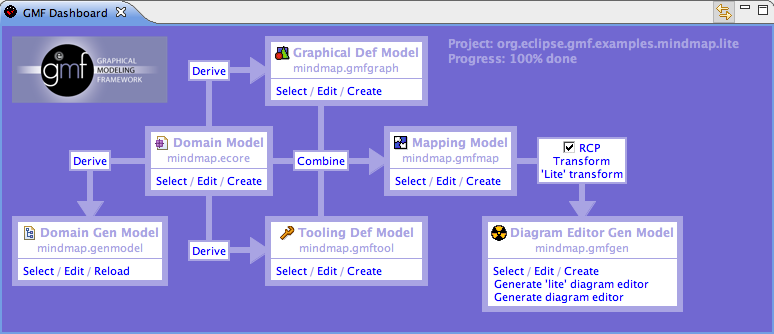
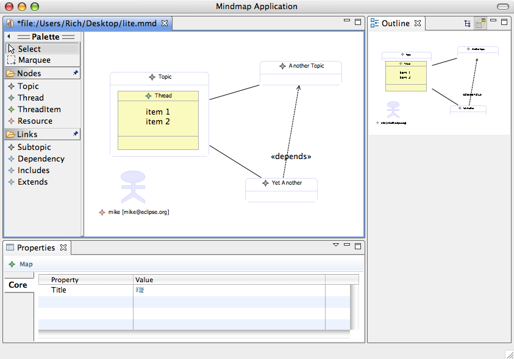
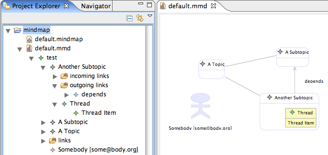
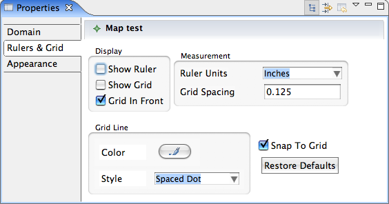

In this fourth part of the GMF Tutorial, we will begin to explore alternative generation options; namely, the lite runtime option and targeting RCP. For this, you will need the experimental SDK installed, in addition to the normal SDK.
Let's begin with a new workspace to keep things isolated from the main tutorial a bit. This also eases maintenance of the tutorial content.
First, let's create a new org.eclipse.gmf.examples.mindmap.lite GMF Project and select the option to use the dashboard view this time. Below is an image of the dashboard view we will use to work through the flow of producing a GMF-based editor. As you can see, it invokes actions for many of the steps we routinely use in GMF-based development, but all from a single location.

First, let's obtain our mindmap.ecore model from the CVS as the input. Copy this file to your project's model folder. Note that this is not the modeling.ecore that is derived from the XSD. A bug in the lite generator requires us to use this "pure" Ecore model at the moment.
Using the dashboard view's 'Select' link in the Domain Model section, locate your mindmap.ecore file. To produce an .ecore and a .genmodel from the xsd, select the 'Derive' link between Domain Model and Domain Gen Model. This will launch the New EMF Model wizard. Work your way through the dialogs and accept the defaults to Finish.
In the opened editor, view the properties of the root 'Mindmap' element. Within the Editor category, select 'true' for the Rich Client Platform property. This will be picked up by our GMF generator later. Expand the root in the editor and change the 'Base Package Name' property of the 'Mindmap' package to 'org.eclipse.gmf.examples' and save the model. Right-click the root and generate your Model, Edit, and Editor (if desired) code. If you generated the editor, you can run it now by creating a new Eclipse Application runtime configuration and selecting 'Run an application' with your org.eclipse.gmf.examples.mindmap.editor.MindmapEditorAdvisorApplication class as the Program to Run.
Now that our domain is set, we'll need to copy our graphical, tooling, and mapping models from the main tutorial. Save them to your model folder (where your domain models are) and update the state of the dashboard for each using its respective 'Select' link.
With our models in place and 83% complete (according to the dashboard ;-), we can create our generator model by first checking the 'RCP' option on the dashboard between Mapping Model and Diagram Editor Gen Model, and then selecting the "'Lite' transform" link.
When done, you can select 'Edit' from the dashboard's Diagram Gen Model section to open the model in the editor. Change the Diagram File Extension property in the Gen Editor to 'mmd' to match the main tutorial. A goal of the lite runtime is to allow for interoperability with diagrams used by the full runtime, which means they use the same notation model.
You may also wish to select the option 'Same File for Diagram And Model' in order to keep it simple for small applications where there may not be a need for multiple views into a single domain model instance (as is the case in our lightweight mindmap application).
Change the Gen Editor Generator Package Name Prefix property to org.eclipse.gmf.examples.mindmap.rcp and the Gen Plugin ID to match.
We're now ready to generate our diagram code and run as an RCP application. To generate, us the 'Generate lite diagram editor' on the dashboard.
To run our RCP-based diagram, create a new Eclipse Application configuration named mindmap-rcp (or something) and select org.eclipse.gmf.examples.mindmap.lite.rcp.MindmapApplication from the Run an Application section of Program to Run. On the Plug-ins tab, opt to 'plug-ins selected below only' and 'Deselect All'. Locate your org.eclipse.gmf.examples.mindmap.lite.diagram plug-in from the list, then 'Add Required Plug-ins' to create a minimal launch configuration. Run the diagram, and use the File menu to create a new diagram, similar to what you see below.

What you will immediately notice are some differences with the full runtime:
These may become available in future versions of the lite runtime, but will be individually selectable by the toolsmith. The goal of the lite runtime is to provide minimal dependencies and small download size for running these kinds of RCP-based diagram editors.
Some new enhancements have arrived in the generator model for the 2.0 release. Here, we will explore the project navigator and property sheet features in the context of our Mindmap application.
At this point, you can either return to your mapping model from above and create a new generator model for creating a full runtime diagram, or return to the workspace containing the solution to part 3 of the tutorial and open its generator model (assuming you've done it with GMF 2.0).
As described in the New and Noteworthy for the 2.0 stream, an extension to the generator model was added to allow for displaying diagram elements within the Project Explorer.
If you look at the generator model, you will find a Gen Navigator element, which includes properties related to the mindmap navigator, and a number of child elements that represent child references. You can alter these as you see fit. When you run your diagram and open the Project Explorer view, you will now have visibility of the diagram contents as seen below.

Another extension made to the generator model involves support for customizing the Properties view for your diagram. In the generator model, you'll find a Property Sheet element (child of the root Gen Editor Generator element), which includes a number of properties, such as for including a caption, read only, etc. It also contains a number of standard and custom property tab child elements that will describe the content of each at runtime, as seen below:
